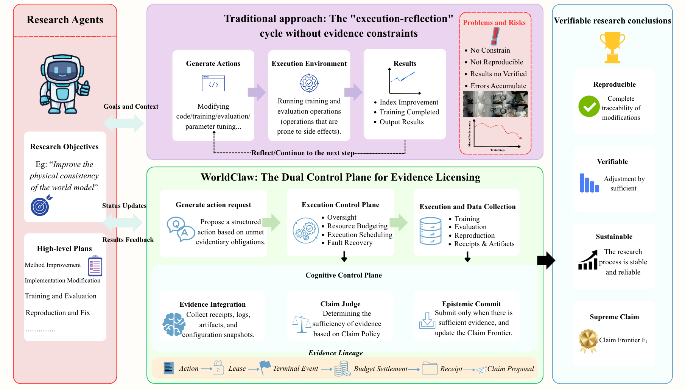
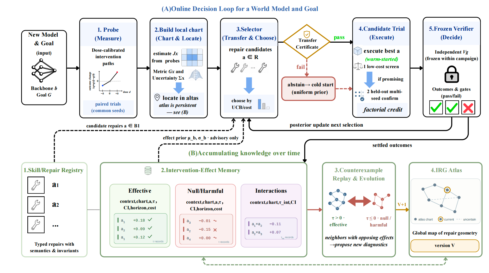
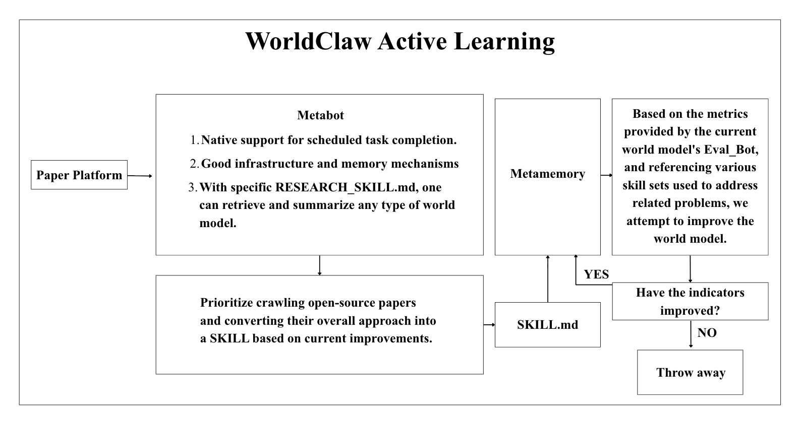
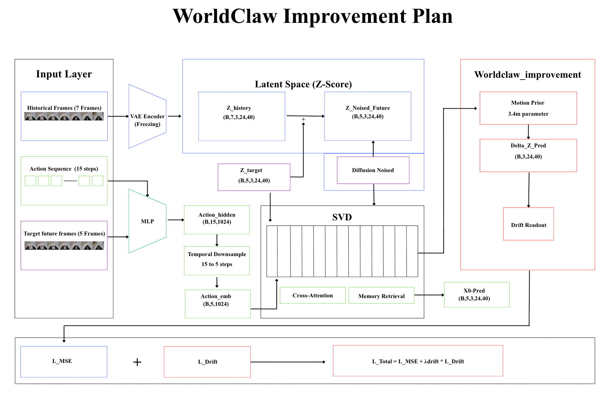
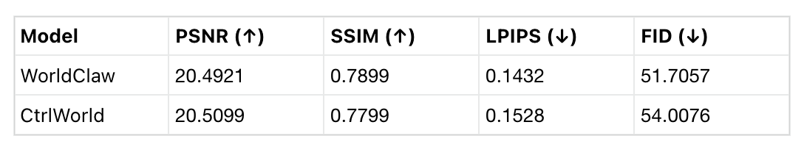
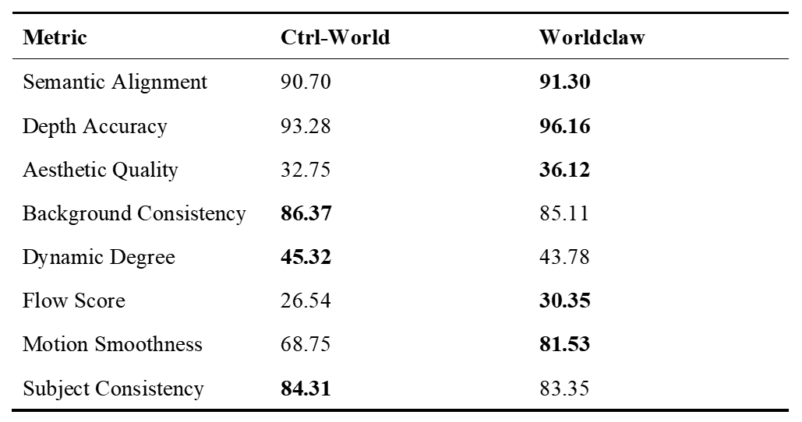
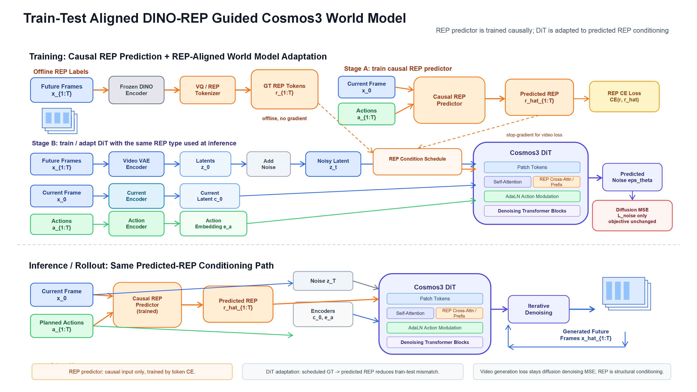
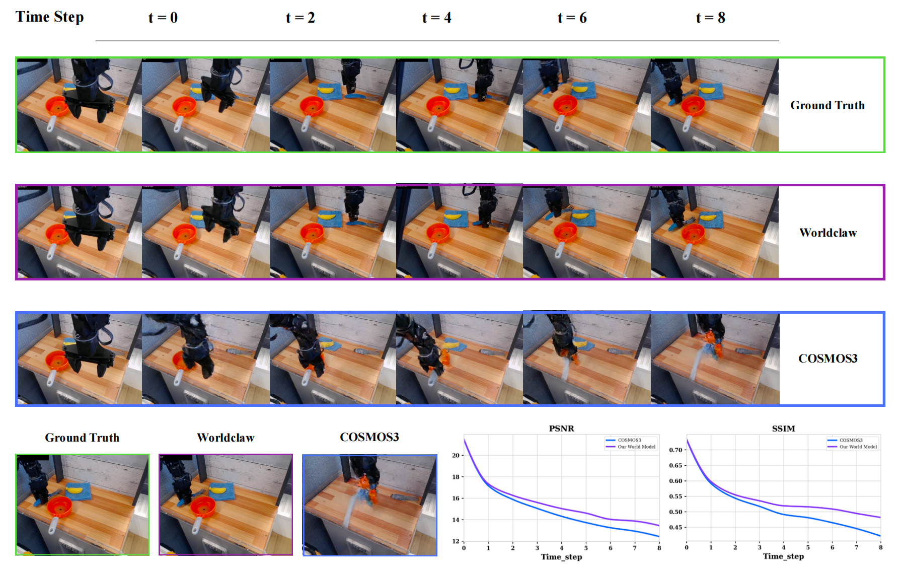
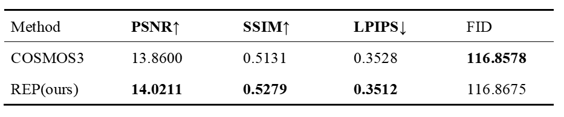
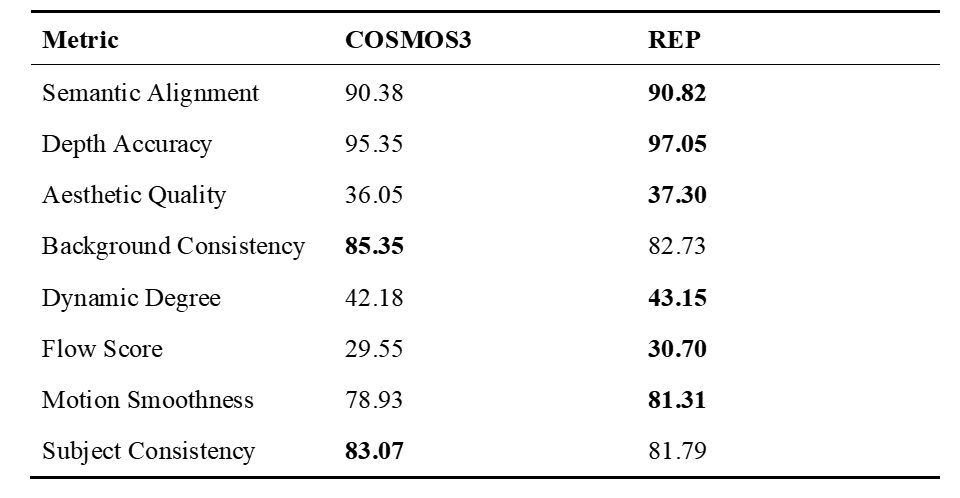

Closed-Loop Research
WorldClaw treats research, training, and evaluation as one feedback loop instead of three separate scripts that have to be coordinated by hand.
Click a 3D memory object above to jump here and inspect the corresponding model, dataset, intervention, evidence, and skill documents.
A project-page memory graph that indexes experiments by model, dataset, intervention, and evidence gate.
World-model research still spends too much effort on manual experiment stitching: choosing a target, running training, collecting rollouts, judging failures, and deciding what to try next.
WorldClaw treats research, training, and evaluation as one feedback loop instead of three separate scripts that have to be coordinated by hand.
Evaluation is not just a final score. It produces diagnosis and patch plans that can drive the next training or replay attempt.
Structured records preserve targets, outputs, failures, and decisions, so later iterations can reuse evidence instead of reconstructing context.
General software agents can edit files, run scripts, and report scores. WorldClaw targets a different control surface: it uses evaluation evidence to intervene in representation geometry, loss design, gradient flow, and data selection.

A Devin-style workflow sees that CtrlWorld lacks an action module, opens models/unet.py, inserts an ActionEncoder with an LLM, and restarts python train.py. The intervention stays at the file-system and code-text layer.
In Plan 1, the diagnosis is that action gradients are drowned by the visual branch. The patch adds a LaMo latent motion prior, drift loss, frozen SVD/VAE components, and hierarchical learning rates.
Existing agents act like external programmers. WorldClaw acts like an internal trainer that changes the learning process.
An AutoGPT-style workflow receives "optimize FID", changes the learning rate from 1e-4 to 1e-5, reruns training, prints a new FID, and stops.
In Plan 2, DINO-REP evaluation finds Depth up and Motion up, but Background and Subject consistency down. The next patch targets an appearance branch, REP injection, and replay data with complex backgrounds.
Existing agents run and read a score. WorldClaw runs, diagnoses, attributes, proposes a patch, selects data, and runs again.
An MLAgentBench-style report may observe loss = 2.3 and recommend lowering the learning rate. The diagnosis remains at the scalar metric level.
ACWM Bench fixes the initial frame, swaps action A and action B, and measures latent-trajectory separation after the action encoder. Low separation indicates diluted action conditioning in the UNet attention path.
Existing agents diagnose symptoms. WorldClaw diagnoses mechanisms inside the representation and gradient path.
WorldClaw runs an online decision loop that probes the model, builds local evidence charts, selects candidate repairs, executes trials, and freezes verification before updating the next selection.

This flowchart shows how WorldClaw closes the active-learning loop: identify uncertain or failing cases, select the next data or replay target, retrain or adapt the model, and feed the new evidence back into evaluation.

This generated skill is an example output of the WorldClaw active-learning loop. It turns a failure diagnosis from CtrlWorld training into a concrete next-round intervention.
Action conditioning was diluted by full-UNet training. The loss oscillated, and the model tended to copy the current frame instead of responding to action.
Add a LaMo latent motion prior, drift loss, and action-conditioned consistency so predicted motion is constrained by both latent dynamics and control input.
Use hierarchical learning rates, freeze stable SVD/VAE parts, monitor gradient flow, and verify the change with targeted ablations.
Evaluation combines benchmark-facing checks, qualitative replay, transfer tests, and policy-rollout comparisons.
External or score-oriented evaluation entry with suboptions such as video-quality, vlm-judge, jepa-similarity, and embodied-task.
Native diagnosis entry for action-sensitivity, rollout-fidelity, stability-guard, policy-alignment, and more.

Three-row replay from the Ctrl-World checkpoint comparison run. The clip is unlabeled in the raw export, so the row order is documented here.



Qualitative replay above the trend chart: `comparison_with_baseline_right.mp4` with baseline on the right.


WorldArena-style scoring gives a broader view of the Plan 2 rollout than PSNR and SSIM alone. The table compares COSMOS3 with REP on semantic, geometric, aesthetic, background, dynamics, flow, smoothness, and subject consistency metrics.
REP is higher on semantic alignment, depth accuracy, aesthetic quality, dynamic degree, flow score, and motion smoothness.
Depth accuracy increases from 95.35 to 97.05, and motion smoothness increases from 78.93 to 81.31.
Background consistency and subject consistency remain lower for REP, which marks the next failure mode for WorldClaw to target.

This experiment tests whether the agent can adapt a world-model repository to a new robot dataset without hand-designing a fresh project page or model wrapper. The target dataset is RoboCOIN-DataManager. The robot embodiment is Agilex Cobot Magic. From the dataset structure, embodiment metadata, camera viewpoint, and action interface, the agent selects a compatible base model and continues training DreamDojo/Cosmos Predict2 action-conditioned video-to-world from the AgiBot post-train 2B weights.
Chinese task name: 打开绿色的文件夹. The rollout compares ground truth, the trained action-conditioned world model, and a no-action prediction.
Chinese task name: 打开红色的文件夹. The same three-column comparison is used to verify that action injection changes the predicted trajectory.
This mosaic replay stresses cross-view agreement. WorldClaw keeps the object interaction and motion progression coherent across three views, showing that the adaptation is not limited to a single camera stream.
This block-stacking overview shows the Cosmos3-DROID policy after RL in RoboLab120. The eight clips are arranged as baseline/RL pairs: columns 1 and 3 are the original Cosmos3 policy, and the columns immediately to their right are the RL-updated results.
Four paired rollouts compare the original Cosmos3 behavior with the RL-trained policy under the same RoboLab120 task family.
The scene is kept the same, but the block positions are swapped. The RL-trained policy preserves the block-stacking behavior under this object re-layout, showing generalization beyond the original placement.
Real-robot FRANKA comparisons on three manipulation tasks. All clips are shown at 4x speed. The stacking task tests interference handling around a blue bowl, the tablecloth task tests path quality, and the drawer task tests occlusion-aware grasping from inside a bowl.
Baseline rollout: the policy reaches the late-stage interaction, but bowl interference prevents a clean blue-block grasp.
Improved rollout: the policy keeps the grasp sequence stable and completes the three-block stacking task.
Baseline rollout: the task is eventually approached through a long, inefficient trajectory, exposing weak path planning on deformable-object manipulation.
Improved rollout: the motion plan is shorter and cleaner, showing a clear gain in path planning after the COSMOS3 update.
Baseline rollout: the polyhedron is occluded inside the bowl, and the policy cannot establish a reliable grasp before the drawer step.
Improved rollout: the policy grasps the occluded object, places it into the drawer, and closes the drawer to complete the task.